5.9 Key Mobile Components
Mobile Requires Unique UI
The small viewport and native operating systems of mobile devices require unique design considerations and, accordingly, unique UI elements. This section outlines the key components that differ from tablet / desktop, and their most common applications. For additional guidance on the theory and practice of designing for mobile, refer to elsewhere in this playbook: Key Mobile Standards and Content Modules.
Considerations & Best Practices
As a reminder, the core consideration of the mobile context is that the device is in-hand and the user is on-the-go. When translating desktop designs to mobile, don’t just miniaturize it – consider how the device and context should influence changes.
Additionally, mobile designs should
- Hide and reveal content.
- Remove unnecessary ornamentation.
- Embrace scrolling.
- Be tested vigorously!
Navigation
One of the most common differences in mobile UI is the navigation, which is most commonly collapsed into a three-line icon nicknamed the “hamburger menu.” While the hamburger treatment may wane in popularity, its intent to minimize the navigation into an interactive icon remains an important mobile requirement.
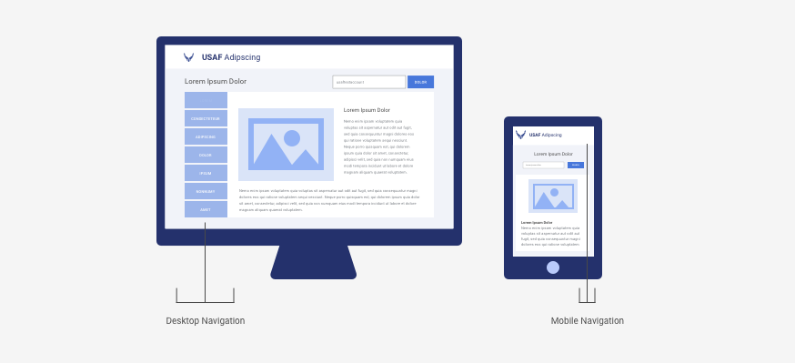
Other Mobile-Specific Components
Certain mobile-specific elements satisfy the best practices of small viewport design, which other leverage the functionality of the phone itself. Below are common examples.
Expand and Collapse

More Button


Call Button

Share
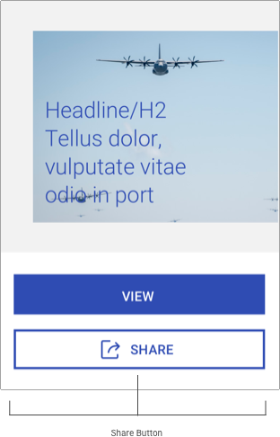
Full-screen Components
Given the small viewport, it is more common in mobile designs to completely overtake the screen with modals, forms, alerts, and error messages that must be dismissed or completed by the user. These should be used sparingly, but are useful for focusing the user’s attention.


Accommodating OS Native Elements
When designing components, consider any native OS elements that may be triggered by interacting with the component. For instance, an open text field will trigger the appearance of the native keyboard, potentially obscuring the component and resulting in a frustrating user experience.


Alpha Standard
The following mobile components illustrate the best practices outlined previously, with the practical choices that make it so.
Disclaimer: Please default to USAF application styles; these component standards are to be used only if those assets are not applicable or not available.
Closed and Open Hamburger Menu
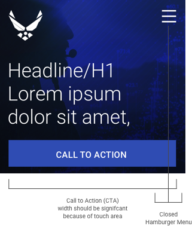

Headers
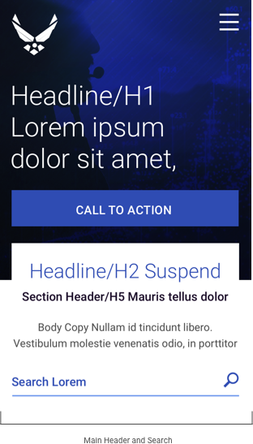

Content Block and Images

 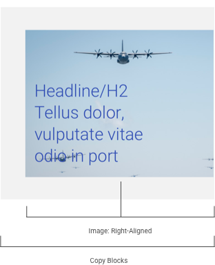
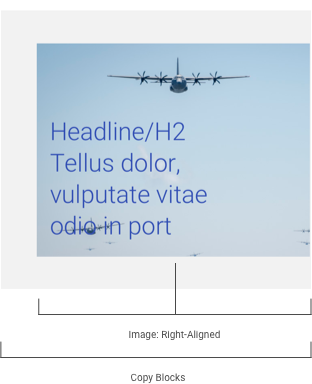


Media


Charts and Graphs
 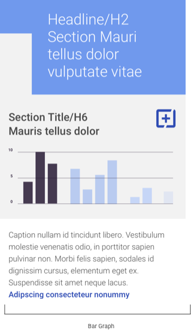
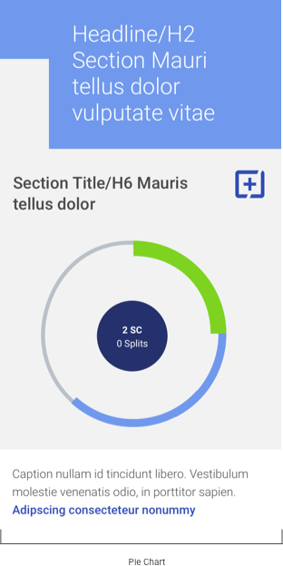
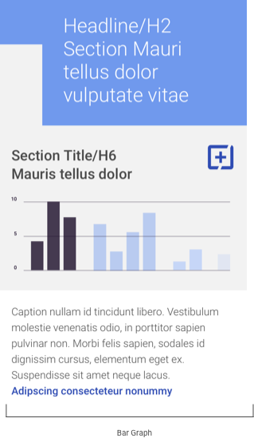
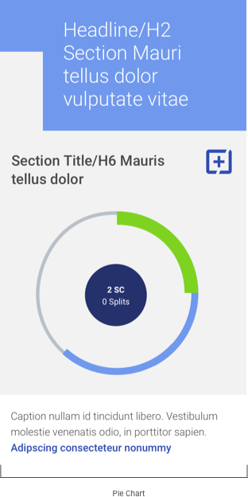
Alerts & Messaging
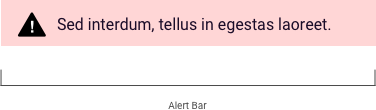
 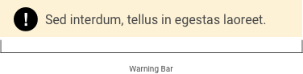
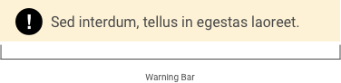


Tables Translated from Desktop to Mobile


References
- iOS Design Standards https://developer.apple.com/design/human-interface-guidelines/ios/overview/themes
- Android Design Standards https://developer.android.com/design/handhelds